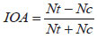

Services on Demand Services on Demand
Article Article


Indicators Indicators


Related links Related links


Share Share


Neotropical Entomology Neotropical Entomology
Print version ISSN 1519-566X Print version ISSN 1519-566X
Neotrop. Neotrop. entomol. Entomol. vol.39 no.6 Londrina Nov./Dec. vol.39 no.6 Londrina Nov./Dec. 2010 2010
http://dx.doi.org/10.1590/S1519-566X2010000600026 http://dx.doi.org/10.1590/S1519-566X2010000600026
PUBLIC HEALTH PUBLIC HEALTH
Efeito da qualidade da água no ciclo de vida e na atração para oviposição de Aedes aegypti (L.) (Diptera: Culicidae) Water quality effect in the life cycle and attraction for oviposition of Aedes aegypti (L.) (Diptera: Culicidae)
The effect of water quality in the life cycle and in the attraction for the egg oviposition of Aedes aegypti (L.) (Diptera: Culicidae) The effect of water quality in the life cycle and in the attraction for the egg oviposition of Aedes aegypti (L.) (Diptera: Culicidae)
Eduardo B Beserra I ; Eduardo I B Beserra; Carlos RM Fernandes I ; Carlos RM Fernandes I; José T de Sousa II ; José de Sousa T II; Eraldo M de Freitas III ; Eraldo M Freitas III; Keliana D Santos I Keliana D Santos I
I Depto de Biologia. I Department of Biology. Univ Estadual da Paraíba, Rua Juvêncio Arruda s/n, 58109-753 Campina Grande, PB, Brasil; ebarbosa@uepb.edu.br ; carivebio@yahoo.com.br ; kelianads@yahoo.com.br State University of Paraíba, Juvêncio Rua Arruda s / n, 58109-753 Campina Grande, PB, Brazil; ebarbosa@uepb.edu.br ; carivebio@yahoo.com.br ; kelianads@yahoo.com.br
II Depto de Química. II Department of Chemistry. Univ Estadual da Paraíba, Rua Juvêncio Arruda s/n, 58109-753 Campina Grande, PB, Brasil; macta@uepb.edu.br Univ State of Paraiba, Street Juvêncio Arruda s / n, 58109-753 Campina Grande, PB, Brazil; macta@uepb.edu.br
ABSTRACT ABSTRACT
The present research aimed at evaluating the influence of the water quality in the life cycle and attraction of Aedes aegypti (L.) females to oviposit using different sources of water (raw sewage, effluent of UASB reactor, effluent of polishing lagoon, effluent of anaerobic filter, rain water and de-chlorinated water). The present research Aimed at Evaluating the influence of the water quality in the life cycle and attraction of Aedes aegypti (L.) females to oviposit using different sources of water (raw sewage, effluent of UASB reactor effluent of polishing lagoon, effluent of anaerobic filter, rain water and de-chlorinated water). The immature development time and survivorship were evaluated on a daily basis in two distinct feeding systems (with and without food). The immature development time and survivorship Were Evaluated on a daily basis in two distinct feeding systems (with and without food). The quality of the water was shown to affect the egg and larval stages, but not the pupal or the adult. The quality of the water was shown to Affect the egg and larval stages, but not the pupal or the adult. In the absence of food, no development was observed in rain water and de-chlorinated water. In the absence of food, the development was Observed in rain water and de-chlorinated water. Immature development was faster in water sources from raw sewage, although with the lowest survivorship (37.3%). Immature development was faster in water sources from sewage raw, although with the lowest survivorship (37.3%). Free-choice tests indicated that females preferred to lay most of their eggs on water collected from the effluent of a UASB reactor, achieving the highest oviposition activity index (OAI) of 0.57. Free-choice tests Indicated que females preferred to lay most of Their eggs on water collected from the effluent of the UASB reactor, Achieving the highest oviposition activity index (OAI) of 00:57. In non-choice tests, females laid larger batches of eggs in water collected from anaerobic filters (204.8 eggs), with the lowest number of eggs being laid on de-chlorinated water (37.3 eggs). In non-choice tests, females laid larger batches of eggs in water collected from anaerobic filters (204.8 eggs), with the lowest number of eggs being laid on de-chlorinated water (37.3 eggs). It can be concluded that A. It Can Be Concluded que A. aegypti does not demonstrate any particular preference to lay eggs on clean water. aegypti does not Manda any particular preference to lay eggs on clean water. This has serious implications for developing strategies to manage populations of this important vector in urban areas as it was shown to lay eggs and successfully develop on several different sources of water. This has serious implications for Developing strategies to manage Populations of this important vector in urban areas the it was shown to lay eggs and successfully on Develop Several different sources of water.
Key words: Vector, dengue, aquatic development, biology Key words: Vector, dengue, aquatic development, biology
Aedes aegypti (L.) é o mosquito mais importante nos registros epidemiológicos da febre amarela e dos quatro sorotipos do vírus da dengue (VDen - 1. VDen - 2, VDen - 3 e VDen - 4) (Silva et al 1998, Lozovei 2001, Forattini 2002). Aedes aegypti (L.) is the most important mosquitoes in epidemiological records of yellow fever and the four serotypes of dengue virus (VDEN - 1. VDEN - 2 VDEN - 3 and VDEN - 4) (Silva et al 1998, 2001 Lozovei , Forattini 2002). Está amplamente distribuído, desenvolvendo suas atividades nos mesmos ambientes e horários das populações humanas (Natal 2002), especialmente aquelas que habitam regiões com condições de infra-estrutura deficiente, o que favorece o desenvolvimento e o estabelecimento do vetor e, consequentemente, os sorotipos virais por ele veiculados. It is widely distributed, developing its activities in the same environments and times of human populations (Christmas 2002), especially those that live in regions with conditions of poor infrastructure, which favors the development and Vector establishment and consequently the viral serotypes for it served.
A compreensão da bioecologia das populações de A. Understanding the bio-ecology of populations of A. aegypti é imprescindível para a elaboração de estratégias de controle. aegypti is essential for the development of control strategies. Tais estudos, ao avaliarem os padrões de desenvolvimentos das diferentes fases do ciclo de vida dos insetos, contribuem para a compreensão de sua dinâmica populacional e auxiliam na determinação das estratégias de controle. Such studies, to assess the patterns of development of the different stages of the life cycle of insects, contribute to the understanding of the population dynamics and assist in determining control strategies. No caso de A. In the case of A. aegypti , pode-se ainda fazer previsão dos riscos de ocorrência de epidemias de dengue com base no monitoramento de sua distribuição e abundância (Tilak et al 2005). aegypti, it can still make forecasting the risk of occurrence of dengue epidemics based on the monitoring of their distribution and abundance (Tilak et al 2005).
Fatores ambientais associados ao ciclo de vida do inseto podem indicar os ambientes adequados para oviposição e desenvolvimento. Environmental factors related to the insect's life cycle may indicate the appropriate environments for oviposition and development. O desenvolvimento imaturo de A. The immature development of A. aegypti pode ser influenciado pelo tipo e qualidade dos reservatórios de água, o que torna imprescindível a realização de estudos de atratividade para oviposição e de avaliação das características biológicas com o objetivo de se compreender os fatores relacionados com o reconhecimento das coleções de água apropriadas para o seu desenvolvimento e reprodução. aegypti can be influenced by the type and quality of water reservoirs, which makes it essential to carry out the attractiveness of studies for oviposition and evaluation of biological characteristics in order to understand the factors related to the recognition of appropriate water collections for development and reproduction. Segundo Varejão et al (2005), esse vetor reproduz-se em reservatórios de águas limpas, embora possa se adaptar às novas situações impostas pelo homem, adaptando-se a criadouros. According Varejao et al (2005), this vector reproduces in clean water reservoirs, although it can adapt to new situations imposed by man, adapting to breeding. Tem sido demonstrado que a salinidade da água e a presença de coliformes fecais e bactérias são fatores que afetam a oviposição por esse inseto, diminuindo ou aumentando a mesma, respectivamente (Navarro et al 2003). It has been demonstrated that the salinity and the presence of fecal coliform bacteria and are factors that affect oviposition by this insect, the same decreasing or increasing, respectively (Navarro et al 2003).
O controle da dengue constitui um grande desafio, pois A. Dengue control is a major challenge because A. aegypti está adaptada ao ambiente urbano, de forma que para se conhecer a sua biologia é preciso estudar a relação do inseto com o homem e com as variáveis do meio em que a espécies está inserida. aegypti is adapted to the urban environment, so to know their biology is necessary to study the insect's relationship with the man and the means of the variables in which the species is inserted. Assim, este trabalho teve como objetivo avaliar a influência da qualidade da água no ciclo de vida e na atração para oviposição de A. This work aimed to evaluate the influence of water quality in the life cycle and attraction for oviposition A. aegypti aegypti
Material e Métodos Material and methods
A pesquisa foi conduzida utilizando-se amostras de populações de A. The research was conducted using population samples A. aegypti coletadas no Bairro de Nova Brasília, município de Campina Grande, PB (07º13'32"S, 35º54'15"W). aegypti collected in the Nova Brasília neighborhood, city of Campina Grande, PB (07º13'32 "S, 35º54'15" W). As coletas do mosquito e o estabelecimento de linhagens em laboratório ocorreram entre os meses de novembro de 2005 e julho de 2006. A linhagem do mosquito foi obtida a partir de ovos coletados em 50 ovitrampas instaladas no intra e peridomicílio de residências escolhidas aleatoriamente em dez quarteirões, onde foram instaladas cinco armadilhas por quarteirão. The collections of the mosquito and the establishment of lines in the laboratory occurred between the months of November 2005 and July 2006. The strain of the mosquito was obtained from eggs collected in 50 ovitraps installed on intra and peridomicile of randomly chosen households in ten blocks where they were installed five traps per block.
Técnica de manutenção de Aedes aegypti em laboratório. A manutenção de A. Aedes aegypti maintenance technique in the laboratory. The maintenance A. aegypti e os bioensaios de laboratório foram conduzidos em sala climatizada (26 ± 2ºC e fotofase de 12h). aegypti and laboratory bioassays were conducted in a room (26 ± 2 ° C and photoperiod of 12h). As palhetas de eucatex contendo ovos de A. The eucatex straws containing eggs of A. aegypti provenientes do campo foram colocadas para secar por 48h e, em seguida, acondicionadas em bandejas plásticas de cor branca (40 x 27 x 7,5 cm) com um terço de sua capacidade preenchida com água desclorada. aegypti from the field were left to dry for 48 hours and then placed in plastic trays white (40 x 27 x 7.5 cm) with a third of its capacity filled with de - chlorinated water. Após a eclosão, ração para peixe ornamental (Alcon/Goldfish crescimento) foi oferecida na proporção de 100 mg/bandeja, sendo as mesmas cobertas por tela de malha fina. After hatching, ornamental fish feed (Alcon / Goldfish growth) was offered in a ratio of 100 mg / tray, the same being covered by thin mesh screen. As pupas, após sexadas, foram mantidas em copos descartáveis de 250 ml em gaiolas de manutenção dos adultos (40 cm x 40 cm x 30 cm), e mantidas na densidade de 200 indivíduos (100 machos e 100 fêmeas). The pupae after sexed were kept in plastic cups of 250 ml in adult maintenance cages (40 cm x 40 cm x 30 cm) and maintained at a density of 200 individuals (100 males and 100 females).
Os adultos foram alimentados com solução de mel a 20%; Adults were fed with 20% honey solution; às fêmeas foi permitido repasto sanguíneo em codornas, Coturnix japonica , durante 30 min, três vezes por semana. Females were allowed to blood meal in quail, Coturnix japonica, for 30 min, three times a week. Após o repasto, um copo descartável de 250 ml com água desclorada, com um funil plástico revestido por um papel filtro para servir como substrato de oviposição, foi introduzido no interior de cada gaiola. After the meal, a disposable cup 250 ml with dechlorinated water with a plastic funnel lined with a filter paper to serve as oviposition substrate was introduced into each cage.
Obtenção de amostras de águas para os testes. Amostras de água foram coletadas na Estação Experimental de Tratamento Biológico de Esgotos (EXTRABES),Companhia de Água e Esgotos da Paraíba (CAGEPA), situada no bairro do Tambor, em Campina Grande, PB. Water samples obtained for testing. Water samples were collected in Biological Treatment of Experimental Station Sewage (EXTRABES), Water and Sewerage Company of Paraíba (CAGEPA), located in the district of Tambor in Campina Grande, PB. O material foi obtido em um sistema que compreende uma sequência de tratamento de esgoto constituído de: a) um tanque de equalização, que recebia esgoto bruto originário da rede coletora da zona urbana de Campina Grande ; b) um reator UASB ( Upflow Anaerobic Sludge Blanket ) como unidade de tratamento anaeróbio, construído de fibra de vidro com capacidade de 5 m 3 ; The material was obtained in a system comprising a sewage treatment sequence consisting of: a) an equalization tank, which received raw sewage originating from the sewage system in the urban area of Campina Grande; b) an UASB (Upflow Anaerobic Sludge Blanket ) as anaerobic treatment unit, fiberglass constructed with capacity of 5 m 3; c) um filtro anaeróbio de chicanas, também de fibra de vidro e capacidade de 1 m 3 (Silva et al 2005); c) an anaerobic filter baffles, also glass fiber and capacity of 1 m 3 (Silva et al 2005); ed) uma lagoa de polimento constituída de cinco raias de 10 mx 1 mx 65 cm em alvenaria. and d) an incorporated polishing pond five streaks of 10 mx 1 mx 65 cm masonry. Além desses pontos de coleta, também foram utilizadas amostras de e) água de chuva armazenada em cisternas residenciais e, finalmente, como controle, f) água tratada e desclorada, em filtro desclorador de carvão ativado (grau de filtração de 5 µ), acoplado à torneira d'água. In addition to these collection points, they were also used samples and) rainwater stored in residential tanks and, finally, as a control, f) treated water and unchlorinated in activated carbon desclorador filter (filtration degree of 5 μ) coupled the tap water.
Desenvolvimento de A. Development A. aegypti em seis condições de água. O desenvolvimento do mosquito nos seis tipos de água foi avaliado na presença e ausência de alimento. aegypti six water conditions. The development of mosquitoes within six types of water was assessed in the presence and absence of food. Cada tratamento contou com cinco repetições, sendo cada uma delas constituída de bandeja plástica de cor branca (40 cm x 27 cm x 7 cm ), cobertas com uma tela de malha fina, contendo 1 L de água e 200 larvas neonatas de A. Each treatment had five repetitions each consisting of plastic tray white (40 cm x 27 cm x 7 cm), covered with a fine mesh screen, containing 1 L of water and 200 neonate larvae of A. aegypti . aegypti. Para o bioensaio com alimento, foram oferecidos 100 mg de ração para peixe ornamental (Alcon/Goldfísh crescimento) por bandeja. For the bioassay with food, 100 mg of feed were offered for ornamental fish (Alcon / goldfish growth) per tray. Para a fase de ovo, foram avaliadas 10 posturas por tratamento, acondicionadas em placas de Petri (10 cm x 2 cm), sendo considerados inviáveis os ovos que não deram origem a larvas após 10 dias. For the egg stage 10 positions were assessed per treatment, placed in Petri dishes (10 cm x 2 cm), are considered non - viable eggs which gave rise to no larvae after 10 days. Os adultos foram mantidos em gaiolas para acasalamento (20 cm 3 ), contendo, cada uma, dez casais e repetidas cinco vezes. Adults were kept in cages for mating (20 cm 3), each containing ten couples and repeated five times. Foram avaliados, diariamente, o período de desenvolvimento, a viabilidade e duração das fases de ovo, larva e pupa, e a longevidade e a fecundidade dos adultos. Were evaluated daily, the development period, the viability and duration of the stages of egg, larva and pupa, and longevity and fecundity of adults.
Caracterização físico-química das diferentes fontes de água. Durante os bioensaios foram separadas três amostras de água em diferentes condições, em três momentos: 1º) antes do início do bioensaio; . Physical and chemical characteristics of different sources of water during the bioassays were separated three water samples in different conditions, in three stages: 1) before the bioassay; 2º) no terceiro dia do período larval; 2) on the third day of the larval period; e 3º) ao final do período larval, as quais foram enviadas para análise físico-química, pelo Grupo de Pesquisa do Programa de Pesquisa em Saneamento Básico, PROSAB, na Estação de Tratamento Biológico de Esgotos (EXTRABES/CAGEPA). and 3) the end of the larval period, which were sent to physical and chemical analysis, the Research Group of the Research Program on Basic Sanitation, PROSAB in Biological Treatment Plant Sewage (EXTRABES / CAGEPA). Analisaram-se as seis condições de água tendo como referencial os índices físicos e químicos, conforme método do Standard Methods for the Examination of Wastewater (Apha 1998) ( Tabela 1 ). Analyzed the six water conditions as reference the physical and chemical indexes, as the method Standard Methods for the Examination of Wastewater (Apha 1998) ( Table 1 ). Também foram realizadas leituras diárias de temperatura mediante o uso de termômetro químico com aferição de 0ºC a 60ºC e de pH, por meio de PHmetro digital. Also they were performed daily temperature readings through the use of chemical measurement with thermometer 0 ° C to 60 ° C and pH using a digital pH meter.
Atração para oviposição das diferenets fontes de água. A atratividade das diferentes amostras de água para oviposição do mosquito foi avaliada considerando-se duas situações: 1) múltipla escolha e 2) sem chance de escolha. . Attraction for oviposition of diferenets water sources The attractiveness of different samples of water for mosquito oviposition was evaluated considering two situations: 1) multiple choice and 2) no choice.
Teste de múltipla escolha. Neste teste foi avaliada a atração para oviposição, considerando-se o delineamento experimental em blocos ao acaso, com seis tratamentos e seis repetições, adotando-se como o controle a água desclorada. Multiple choice test. In this test we evaluated the attraction for oviposition, considering the experimental design of randomized blocks with six treatments and six repetitions, adopting as control unchlorinated water. Cada repetição foi constituída por uma gaiola para acasalamento contendo as seis amostras de água e dez casais de A. Each repetition consisted of a cage for mating containing six water samples and ten couples of A. aegypti . aegypti. Aos casais foi ofertada uma solução de mel a 20% e permitido o repasto sanguíneo em codornas por um período de 15 min por três dias intercalados. Couples were offered a 20% solution of honey and allowed the blood meal in quails for a period of 15 min for three days interspersed. Após o terceiro dia de repasto, foram distribuídos no interior das gaiolas as seis diferentes amostras de água contidas em copos descartáveis de 250 ml. After the third day meal, they were placed inside the cage six different water samples contained in 250 ml cups. Em cada copo foi colocado um funil plástico revestido por um papel filtro para servir como substrato de oviposição. In each beaker was placed in a plastic funnel lined with a filter paper to serve as oviposition substrate. Após o terceiro dia de repasto sanguíneo, realizaram-se avaliações diárias, durante um período de 72h, sendo, a cada 24h, retirados os papéis e contados o número de ovos com o auxílio de um microscópio estereoscópico. After the third day of blood meal, daily assessments were carried out during a period of 72 hours, and every 24 hours, removed from the paper and counted the number of eggs with the aid of a stereomicroscope.
Teste sem chance de escolha. Neste teste foi avaliada a atração para oviposição seguindo delineamento experimental inteiramente casualizado com seis tratamentos e seis repetições, constituídos de uma gaiola de madeira telada (20 cm 3 ), contendo dez casais de A. Test no choice. In this test we evaluated the attraction for oviposition following completely randomized design with six treatments and six replications, consisting of a wooden cage screened (20 cm 3) containing ten couples of A. aegypti e apenas um substrato para oviposição com uma condição de água. aegypti and only a substrate for oviposition with a condition of water. As avaliações foram diárias, seguindo-se os procedimentos do teste de múltipla escolha. The evaluations were daily, following the procedures of the multiple - choice test.
Análise estatística. Os dados biológicos referentes às fases de larva e pupa foram analisados em esquema fatorial 2 x 6, sendo dois regimes de alimentação e seis condições de água. Statistical analysis. The biological data on larval and pupal stages were analyzed in factorial 2 x 6, two feeding regimes and six water conditions. Para as fases de ovo e adulta, seguiu-se o delineamento experimental inteiramente casualizado. For the phases of egg and adult, followed a completely randomized design. Para avaliar a preferência para oviposição, o delineamento experimental foi em blocos ao acaso para o teste de múltipla escolha, enquanto inteiramente casualizado para o teste sem chance de escolha. To assess the preference for oviposition, the experimental design was a randomized block design for the multiple choice test, while randomized to the test no choice. Os resultados experimentais foram submetidos à análise de variância e as médias comparadas pelo teste de Tukey (P> 0,05). The experimental results were submitted to analysis of variance and means were compared by Tukey test (P> 0.05). Para se avaliar a atratividade das coleções de água para oviposição de A. To assess the attractiveness of water collections for oviposition A. aegypti foi determinado o índice de oviposição ativa (IOA), dado pela fórmula de Kramer & Mulla (1979): aegypti was determined active oviposition rate (IOA), given by Kramer & Mulla (1979):

Onde Nt = número de ovos na solução teste e Nc = número de ovos na solução controle. Where Nt = number of eggs in the test solution and Nc = number of eggs in the control solution. Segundo esses autores o IOA > +0,3 indica atratividade, enquanto que IOA < -0,3 indica que a solução teste é repelente para a oviposição. According to these authors the IOA> +0.3 indicates attractiveness, while IOA <-0.3 indicates that the test solution is repellent for oviposition.
Resultados results
Caracterização físico-química das diferentes fontes de água. As temperaturas médias das diferentes fontes de água em que ocorreu o desenvolvimento das fases de larva e pupa de A. Physico-chemical characterization of the different sources of water. The average temperatures of the different sources of water in which there was the development of larval stages and pupal A. aegypti variaram de 25,7ºC a 26,1ºC, com pouca diferença entre os tratamentos, enquanto o pH apresentou variação de neutro a ligeiramente básico ( Tabelas 2 a 4 ). aegypti ranged from 25,7ºC to 26,1ºC, with little difference between the treatments, while the pH had neutral to slightly basic range ( Tables 2 to 4 ). A análise físico-química das diferentes fontes de água testadas ( Tabelas 3 e 4 ) mostrou redução gradativa da disponibilidade de oxigênio dissolvido à medida em que ocorria o desenvolvimento larval, indicando maior consumo de oxigênio ocasionado pela digestão biológica da matéria orgânica, provavelmente exercida pelas larvas de A. The physicochemical analysis of the different sources of tested water ( Tables 3 and 4 ) showed gradual reduction in the availability of dissolved oxygen as they occurred larval development, indicating a higher oxygen consumption caused by the biological digestion of the organic matter, probably exercised by larvae of A. aegypti e por microrganismos ali existentes. aegypti and there micro-organisms. A Demanda Química de Oxigênio (DQO) sofreu acréscimo em todos os tratamentos, justificando a maior produção de biomassa em relação ao seu consumo; The Chemical Oxygen Demand (COD) has been increased in all treatments, justifying the higher biomass production in relation to consumption; a turbidez foi mais elevada nos tratamentos que receberam ração, provavelmente como conseqüência da maior quantidade de substâncias dissolvidas no meio. The turbidity was higher in the treatments that received feed, probably as a result of the greater amount of dissolved substances in the middle.
A condutividade elétrica apresentou-se mais elevada naqueles substratos com maior grau de poluição, demonstrando maior concentração de íons dissolvidos. The electrical conductivity showed to be higher in those substrates with higher levels of pollution, showing higher concentration of dissolved ions. O decréscimo dos valores de ortofosfato revela que houve maior consumo de nutrientes e presença de organismos alimentando-se e consumindo oxigênio do meio, principalmente em fontes de águas acrescidas de ração para as larvas ( Tabelas 3 e 4 ). The decrease of the orthophosphate values reveals that there was higher consumption of nutrients and the presence of organisms feeding and consuming oxygen from the medium, especially in water sources added to food for larvae ( Tables 3 and 4 ).
Desenvolvimento do mosquito em seis diferentes fontes de agua. Foram observadas diferenças significativas quanto ao período de desenvolvimento embrionário e a viabilidade entre os seis meios estudados. Mosquito developing six different sources of water. Significant differences were observed for embryonic development and viability of the six studied media. A água desclorada mostrou-se mais favorável ao desenvolvimento embrionário de A. The unchlorinated water was more favorable to the embryonic development of A. aegypti, proporcionando o menor tempo de desenvolvimento e a maior viabilidade ( Tabela 5 ). aegypti, providing the shortest development and higher viability ( Table 5 ).
Houve interação significativa entre as fontes de água e o regime alimentar com relação à duração e sobrevivência larval ( Tabela 5 ), mas não para a duração e sobrevivência de pupas. There was a significant interaction between water sources and diet in relation to the duration and larval survival ( Table 5 ) but not for the duration and survival of pupae. As larvas apresentaram menores períodos de desenvolvimento quando alimentadas com ração para peixe, levando de 6,3 a 9,7 dias para completar seu desenvolvimento, comparados aos 7,4 a 10,4 dias para as larvas mantidas sem alimentação. Larvae had shorter periods of development when fed feed fish, taking 6.3 to 9.7 days to complete its development, compared to 7.4 to 10.4 days for the larvae kept without food. A sobrevivência larval também diminuiu significativamente em função do meio aquático e regime alimentar. Larval survival was also significantly reduced due to the aquatic environment and diet. Não houve desenvolvimento completo quando as larvas foram mantidas sem alimento em água de chuva e água desclorada. There was no full development when the larvae were kept without food in rainwater and de - chlorinated water. Esse regime alimentar também diminuiu significativamente a sobrevivência quando as larvas foram mantidas em água do efluente do reator UASB e em água do efluente do filtro anaeróbio, com valores de 48,3% e 44,2%, contra 83,5% e 63,0% quando na presença de alimento nessas mesmas fontes de água. This diet also significantly decreased survival when the larvae were kept in water and the UASB reactor effluent water effluent of the anaerobic filter, with values of 48.3% and 44.2% against 83.5 and 63%, 0% in the presence of food in these same water sources. Em esgoto bruto e efluente de lagoa de polimento, a sobrevivência larval foi menor quando ofertada ração para as larvas ( Tabela 5 ). Raw sewage and polishing pond effluent, larval survival was lower when offered food for the larvae ( Table 5 ).
Comparando-se o desenvolvimento larval entre as coleções de água, constatou-se um aumento no período de desenvolvimento com o aumento no grau de pureza da água, independentemente do fornecimento ou não de alimento, sendo observado em efluente de filtro anaeróbio, água de chuva e água desclorada maior tempo para o completo desenvolvimento. Larval development Comparing between water collections, there was an increase in the development period with the increase in the degree of purity of the water, independently of the supply or non food, being observed in anaerobic filter effluent, storm water unchlorinated water and more time for full development. A sobrevivência larval foi menor no esgoto bruto quando adicionada ração à água, e maior quando as larvas foram mantidas em água da lagoa de polimento sem oferta de alimento. Larval survival was lower in raw sewage when added to feed water, and increased when the larvae were kept in water without food supply polishing pond. Contudo, apesar da baixa sobrevivência larval na ausência de alimento em água de esgoto bruto, efluente de reator UASB e filtro anaeróbio, foi possível o desenvolvimento larval completo, o que não ocorreu em água de chuva e água desclorada, onde houve 100% de mortalidade logo nos estágios iniciais de desenvolvimento ( Tabela 5 ). However, despite the low larval survival in the absence of food raw sewage, reactor effluent UASB and anaerobic filter, complete larval development was possible, which did not occur in rainwater and unchlorinated water where there was 100% mortality just in the early stages of development ( Table 5 ).
A fase de pupa não sofreu efeitos significativos com relação à duração e sobrevivência, independente do regime alimentar larval. The pupal stage suffered no significant effects regarding the duration and survival, regardless of larval diet. A duração média foi de dois dias, enquanto a sobrevivência foi alta em todas as condições de tratamento, de 98,9% a 100 % para as pupas provenientes de larvas alimentadas com ração, e de 98,4% a 99,8% para aquelas originadas de larvas não alimentadas. The average length was two days, while the survival rate was high in all conditions of treatment, 98.9% to 100% for pupae from larvae fed ration and 98.4% to 99.8% for those originating from unfed larvae.
Foi observada diferença significativa com relação à longevidade dos machos cujas larvas se desenvolveram em água desclorada, quando comparados àqueles criados em água da lagoa de polimento. Significant difference was observed regarding the longevity of males whose larvae developed in unchlorinated water when compared to those created in water polishing pond. No entanto, não foram observadas diferenças quanto à longevidade e fecundidade das fêmeas de A. However, no differences were observed regarding the longevity and fecundity of female A. aegypti ( Tabela 6 ). aegypti ( Table 6 ).
Atração para oviposição nas diferentes fontes de água. Foram encontradas diferenças significativas com relação ao número médio de ovos colocados nos diferentes meios quando às fêmeas foi dada a chance de escolha entre os seis meios, entre água do efluente de reator UASB e água desclorada. Attraction for oviposition on different sources of water. There were significant differences in the average number of eggs placed in different media when the females were given the chance to choose between the six means of water UASB reactor effluent and unchlorinated water. O cálculo do índice de oviposição ativa (IAO) mostrou que com exceção de água de filtro anaeróbio (IAO = 0,09), as demais coleções de água foram atrativas para oviposição de A. The calculation of active oviposition index (IAO) showed that with anaerobic water filter exception (IAO = 0.09), the remaining water collections were attractive for oviposition A. aegypti , com destaque para a água coletada de reator UASB, onde o IAO foi de 0,57. aegypti, especially water collected from UASB reactor, where the IAO was 0.57. Quando as fêmeas foram confinadas em gaiolas com apenas uma das amostras de água, detectou-se diferença significativa entre os tratamentos, com maior número de ovos em filtro anaeróbio em relação à água desclorada ( Tabela 6 ). When females were confined in cages with only one of the water samples, found a significant difference between treatments, with more eggs in anaerobic filter in relation to unchlorinated water ( Table 6 ).
Discussão Discussion
A análise do desenvolvimento de A. Analysis of the development of A. aegypti em coleções de água com diferentes graus de poluição mostrou que o vetor é capaz de se desenvolver em água com elevados níveis de poluição, como aconteceu em esgoto bruto, efluente de reator UASB, lagoa de polimento e filtro anaeróbio, confirmando a tolerância a poluentes relatada para espécies de mosquitos, principalmente para as sinantrópicas e antropogênicas (Consoli & Oliveira 1994). aegypti water samples with different degrees of pollution showed that the vector is able to grow in water with high levels of pollution, as in the raw sewage, reactor effluent UASB, pond polishing and anaerobic filter, confirming tolerance pollutant reported for species of mosquitoes, especially for synanthropic and anthropogenic (Consoli & Oliveira 1994).
O efeito conjunto da qualidade da água e da adição de alimento na fase larval de A. The combined effect of water quality and the addition of food in the larval stage of A. aegypti resultou no alongamento do período de desenvolvimento ( Tabela 4 ), à medida que a qualidade da água, com ou sem alimento foi melhorando e diminuindo a sua turbidez ( Tabelas 2 e 3 ). aegypti resulted in lengthening development period ( Table 4 ), as the quality of the water, with or without food has been improving and lowering the turbidity ( Tables 2 and 3 ). A turbidez é um parâmetro que, dentre outros, indica a pouca penetrabilidade da luz no corpo aquático. Turbidity is a parameter that, among others, indicates the low penetration of light in the water body. Como as larvas de A. As the larvae of A. aegypti são fotofóbicas, elas se desenvolveram mais rapidamente nas coleções de água que apresentaram maior turbidez. aegypti are fotofóbicas, they developed more rapidly in water samples that showed higher turbidity. Segundo Consoli & Oliveira (1994), esse fato pode ter relevância no caso de vetores urbanos como o Culex quinquefasciatus Say e A. According Consoli & Oliveira (1994), this may be relevant in the case of urban vectors as Culex quinquefasciatus Say and A. aegypti, que podem, desta forma, se desenvolver em água de esgoto com pouca ou nenhuma luz. aegypti, which may thus develop in sewage water with little or no light.
Outro fator que pode ter contribuído para a diminuição do período de desenvolvimento larval registrado para as larvas mantidas em água do esgoto bruto e efluente de reator UASB, com ou sem adição de alimento, foi a maior concentração de nutrientes, principalmente matéria orgânica como proteínas, carboidratos e lipídios, corroborando a afirmação de Kruguer et al (2002) de que a duração do ciclo de desenvolvimento, bem como a viabilidade dos imaturos, pode ser avaliada pela alimentação disponível no meio, o que pode ser confirmado pelos 100% de mortalidade ocorrida nas larvas mantidas em água de chuva e água desclorada sem alimento. Another factor that may have contributed to the reduction of larval development period recorded for the larvae kept in water from raw sewage and UASB reactor effluent, with or without addition of food, has the highest concentration of nutrients, especially organic matter such as proteins, carbohydrates and lipids, supporting the assertion Kruguer et al (2002) that the length of the development cycle as well as the viability of immature, can be evaluated by the power available on the medium, which can be confirmed by 100% mortality occurred larvae kept in rainwater and water dechlorinated without food.
A baixa sobrevivência das larvas mantidas em esgoto bruto pode estar associada à menor tensão superficial e viscosidade da água. The poor survival of larvae held in raw sewage can be associated with lower surface tension and viscosity of water. Segundo Esteves (1998), a tensão superficial da água decresce com o aumento da temperatura e quantidade de substâncias orgânicas e, quando reduzida a níveis muito baixos, pode prejudicar as comunidades que vivem na superfície da água. According to Esteves (1998), the surface tension of the water decreases with increasing temperature and amount of organic substances and, if reduced to very low levels, can affect the communities living on the surface of the water. Por outro lado, a viscosidade, capacidade da água em oferecer resistência ao movimento dos organismos, aumenta com o teor de substâncias dissolvidas. On the other hand, the viscosity, water's ability to provide resistance to movement of organisms increases with the content of dissolved substances. Essa condição pode ter ocorrido nos bioensaios presentes, pois foram desenvolvidos em condições de temperatura elevada, aproximadamente 25ºC a 26ºC na água e 26ºC no ambiente, e os elevados níveis de matéria orgânica, condutividade elétrica e nitrogênio total do esgoto bruto ( Tabelas 3 e 4 ) podem ter dificultado a manutenção das larvas junto à superfície da água, limitando as trocas gasosas das mesmas, ao mesmo tempo em que aumentava o gasto energético para obtenção de alimento, o que pode ter contribuído para a mortalidade larval. This condition may have occurred in bioassays present, as were developed in conditions of high temperature, about 25 ° C to 26 ° C in water and 26ºC in the environment, and high levels of organic matter, electrical conductivity and total nitrogen of the raw sewage ( Tables 3 and 4 ) may have hindered the maintenance of the larvae attached to the surface of the water, limiting the gaseous exchange of the same, at the same time increasing the energy expenditure for obtaining food, which may have contributed to the larval mortality.
Segundo Lopes et al (1993), fêmeas de A. According to Lopes et al (1993), females of A. aegypti são atraídas para recipientes onde a água não contém altos índices de poluição. aegypti are attracted to containers where water contains high levels of pollution. Porém, os resultados presentes mostram que quanto maior o grau de poluição da água, maior a atratividade da mesma às fêmeas, como, por exemplo, a água do reator UASB, onde o IAO foi de 0,57. However, the present results show that the greater the degree of water pollution, the greater the attraction of females to the same, for example, water UASB reactor, where the IAO was 0.57. Mostram, ainda, que as fêmeas colocaram, em média, maior quantidade de ovos (415,0 ovos) em comparação com a água desclorada (113,2 ovos), em teste de múltipla escolha ( Tabela 5 ). Also show that the females laid on average larger amount of eggs (egg 415.0) compared with dechlorinated water (113.2 eggs) in multiple choice test ( Table 5 ). Assim, para A. Thus, to A. aegypti, a qualidade da água não esta associada ao grau de poluição, mas sim às condições que o meio apresenta para o desenvolvimento e sobrevivência dos imaturos. aegypti, the water quality is not associated with the degree of pollution, but the conditions that the medium provides for the development and survival of immature.
Fatores físicos, químicos e biológicos, como luminosidade, temperatura, salinidade, matéria orgânica, microrganismos e outras substâncias, que favorecem o desenvolvimento dos imaturos servem como estímulos à fêmea na seleção de local para oviposição (Consoli & Oliveira 1994). Physical, chemical and biological factors such as light, temperature, salinity, organic matter, microorganisms and other substances that favor the development of the immature female to serve as stimuli in the site selection for oviposition (Consoli & Oliveira 1994). Deve-se ressaltar que a pouca penetração da luz causada pela alta turbidez e maior presença de substâncias dissolvidas ( Tabela 3 ) foram condições encontradas em esgoto bruto, efluente de reator UASB, efluente de lagoa de polimento e efluente de filtro anaeróbio, o que não ocorreu em água desclorada. It should be noted that the low penetration of light caused by high turbidity and greater presence of dissolved substances ( Table 3 ) were conditions found in raw sewage, reactor effluent UASB, polishing pond effluent and anaerobic filter effluent, which not It occurred in unchlorinated water. Isso pode ter contribuído para a menor quantidade de ovos depositados e, consequentemente, para a menor atratividade por essa condição da água, como observado quando as fêmeas foram submetidas aos testes de múltipla escolha e sem chance de escolha ( Tabela 6 ). This may have contributed to the smaller amount of deposited eggs and, consequently, to lower attractiveness for the condition of the water, as observed when females were subjected to the tests of multiple choice and no-choice ( Table 6 ).
A seleção de local adequado para oviposição é fundamental para a distribuição e o estabelecimento das populações de A. The selection of suitable place for oviposition is critical for the distribution and establishment of populations of A. aegypti, e tem significado epidemiológico na veiculação dos vírus da febre amarela e da dengue. aegypti, and has epidemiological significance in the dissemination of the virus of yellow fever and dengue. Ao contrário do conhecimento estabelecido, as fêmeas de A. Contrary to the established knowledge, females of A. aegypti não foram atraídas apenas por fontes de água limpa, indicando que o inseto apresenta certa flexibilidade na aceitação de substratos de postura que apresentam variação em sua qualidade. aegypti were attracted not only clean water sources, indicating that the insect has some flexibility in accepting posture substrates that have variations in their quality. Essa característica confere ao vetor grande capacidade de adaptação às diferentes situações ambientais (Tauil 2002), inclusive aquelas consideradas desfavoráveis, como fontes de água poluídas, p.ex. as águas de esgoto bruto e de reator UASB utilizadas na presente pesquisa. This feature gives the vector great ability to adapt to different environmental conditions (Tauil 2002), including those considered unfavorable, as polluted water sources, eg the raw sewage and UASB reactor used in this research.
Essa informação é importante para a orientação de ações de controle, pois aponta para a necessidade de inspeção de todos os tipos de coleções de água durante levantamentos de criadouros de larvas, principalmente naquelas áreas dotadas de menor infra-estrutura, onde os esgotos correm a céu aberto próximos aos domicílios, podendo contaminar recipientes que funcionem como locais usuais de oviposição. This information is important for the orientation control actions, because it points to the need for inspection of all types of water collections during breeding surveys of larvae, especially in those areas endowed with less infrastructure, where the sewers run the sky open close to homes and contaminate containers that function as usual sites of oviposition.
Agradecimentos Thanks
A Secretaria de Saúde do município de Campina Grande e ao 3º Núcleo Regional de Saúde e à Fundação Nacional de Saúde (FUNASA) pelo apoio oferecido durante as instalações das armadilhas para a coleta dos ovos de A. The Health Department of the city of Campina Grande and the 3rd Regional Center for Health and the National Health Foundation (FUNASA) for their support during the installation of the traps to collect the eggs A. aegypti . aegypti. Ao PROSAB/EXTRABES pela colaboração na análise dos parâmetros físicos e químicos dos diferentes tipos de águas utilizados na pesquisa. When PROSAB / EXTRABES the collaboration on the analysis of physical and chemical parameters of different types of water used in the research. A Organização Pan-Americana de Saúde/OPAS e Secretaria de Vigilância em Saúde/SUS/MS pelos recursos que viabilizaram esta pesquisa. The Pan American Health Organization / PAHO and the Secretariat of Health Surveillance / SUS / MS for the resources that enabled this research.
Referências References
Apha AWWA. APHA AWWA. WPCF (1998) Standard methods for the exanimations of water and wastewater. WPCF (1998) Standard methods for the exanimations of water and wastewater. 20ª ed, Washington, DC. 20th ed, Washington, DC. American Public Health Association. American Public Health Association. American Water Works Association, Water Pollution Control Federation, 1155p. American Water Works Association, Water Pollution Control Federation, 1155p. [ Links ] [ Links ]
Consoli RAGB, Oliveira RL (1994) Principais mosquitos de importância sanitária no Brasil. Consoli RAGB, Oliveira RL (1994) Main mosquitoes health importance in Brazil. Rio de janeiro, Editora Fiocruz, 225p. Rio de Janeiro, Editora Fiocruz, 225p. [ Links ] [ Links ]
Esteves FA (1998) Fundamentos de limnologia. Esteves FA (1998) limnology Basics. Rio de Janeiro, Interciência, 602p. Rio de Janeiro, Interscience, 602p. [ Links ] [ Links ]
Forattini OP (2002) Culicidologia Médica. Forattini OP (2002) Medical Culicidology. São Paulo, Edusp, 860p. Sao Paulo, Edusp, 860P. [ Links ] [ Links ]
Kramer LW, Mulla JM (1979) Oviposition attractants and repellents of mosquitoes: oviposition responses of Culex mosquito to organic infusions. Kramer LW, Mulla JM (1979) oviposition attractants and repellents of mosquitoes: oviposition responses of Culex mosquitoes to organic infusions. Environ Entomol 8: 1111-1117. Environ Entomol 8: 1111-1117. [ Links ] [ Links ]
Kruger RF, Ribeiro PB, Carvalho CJB, Costa PRP (2002) Desenvolvimento de Synthesiomyia nudiseta (Diptera: Muscidae) em Laboratório. Kruger RF, PB Ribeiro, Carvalho CJB, Costa PRP (2002) Development Synthesiomyia nudiseta (Diptera: Muscidae) in Laboratory. Iheringia Sér Zool 92: 25-30. Iheringia Sér Zool 92: 25-30. [ Links ] [ Links ]
Lopes J, Silva MAN, Borsato AM, Oliveira VDRB, Oliveira FA (1993) Aedes ( Stegomyia ) aegypti e a culicidofauna associada em área urbana da Região Sul do país. J Lopes, Silva MAN, Borsato AM, Oliveira VDRB, Oliveira FA (1993) Aedes (Stegomyia) aegypti and associated culicidofauna in urban areas of the Southern Region of the country. Rev Saúde Públ 27: 326-330. Rev Governm Health 27: 326-330. [ Links ] [ Links ]
Lozovei AL (2001) Culicídios (Mosquitos), p.59-104. Lozovei AL (2001) culicids (mosquitoes), p.59-104. In Marcondes CB (org.), Entomologia médica e veterinária. In Marcondes CB (ed.), Medical Entomology and Veterinary. 1º ed São Paulo, Atheneu, 432p. 1st ed São Paulo, Atheneu, 432p. [ Links ] [ Links ]
Natal D (2002) Bioecologia do Aedes aegypti . Christmas D (2002) Bioecology of Aedes aegypti. Biológico 64: 205-207. Biological 64: 205-207. [ Links ] [ Links ]
Navarro DMAF, Oliveira PES, Potting RPJ, Brito AC, Fital SJF (2003) The potential attract or repellent effects of different water types on oviposition in Aedes aegypti L. Navarro DMAF, Oliveira PES, Potting RPJ, Brito AC, Fital SJF (2003) The potential Attract or repellent effects of different water types on oviposition in Aedes aegypti L. (Diptera, Culicidae). (Diptera, Culicidae). J Appl Entomol 127: 46-50. J Appl Entomol 127: 46-50. [ Links ] [ Links ]
Silva HHG, Silva RG, Liraik S (1998) Metodologia de criação, manutenção de adultos e estocagem de ovos de Aedes aegypti em laboratório. HHG Silva, Silva RG, Liraik S (1998) creation methodology, adult maintenance and storage of Aedes aegypti eggs in the laboratory. Rev Patol Trop 27: 51-63. Trop Rev Pathol 27: 51-63. [ Links ] [ Links ]
Silva VF, Sousa JT, Vieira FF, Santos KD (2005) Tratamento anaeróbio de esgoto doméstico para fertirrigação. Silva VF, JT Sousa Vieira FF Santos KD (2005) Anaerobic treatment of domestic sewage for fertigation. Rev Bras Eng Agríc Amb 9: 186-190. Rev Bras Eng Agríc Amb 9: 186-190. [ Links ] [ Links ]
Tilak R, Gupta MV, Suryam MV, Yadav JD, Gupta BKKD (2005) A laboratory investigation into oviposition responses of Aedes aegypti to some common household substances and water from conspecific larvae. Tilak R MV Gupta, Suryam MV, Yadav JD Gupta BKKD (2005) A laboratory investigation into oviposition responses of Aedes aegypti to some common household substances and water from conspecific larvae. Med J Arm For India 61: 227-229. Med J India Arm For 61: 227-229. [ Links ] [ Links ]
Tauil PL (2002) Aspectos críticos do controle do dengue no Brasil. Tauil PL (2002) Critical aspects of dengue control in Brazil. Cad Saúde Públ 18: 867-871. Cad Governm Health 18: 867-871. [ Links ] [ Links ]
Varejão JBM, Santos CB, Rezende HR, Bevilacqua LC, Falqueto A (2005) Criadouros de Aedes ( Stegomyia ) aegypti (Linnaeus, 1762) em bromélias nativas na cidade de Vitória, ES. Varejao JBM, Santos CB, Rezende HR, Bevilacqua LC, Falqueto A (2005) Breeding of Aedes (Stegomyia) aegypti (Linnaeus, 1762) in native bromeliads in Vitória, ES. Rev Soc Brasil Med Trop 38: 238-240. Brazil Rev Soc Med Trop 38: 238-240. [ Links ] [ Links ]
Received 11/VII/08. Received 11 / VII / 08.
Accepted 10/V/10. Accepted 10 / V / 10.
Edited by Eunice Galati - FSP/USP Edited by Eunice Galati - FSP / USP


{kind=link}
{kind=link}
{kind=link}
{kind=link}
{kind=link}
{kind=link}